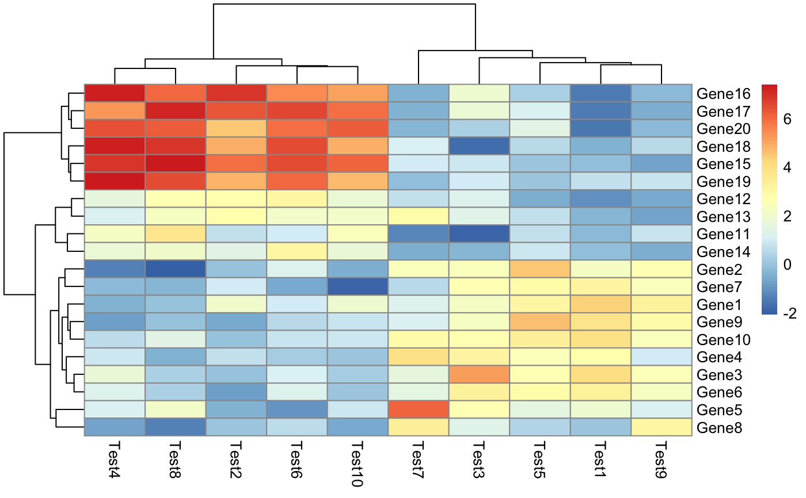

A function to draw clustered heatmaps where one has better control over some graphical parameters such as cell size, etc.
pheatmap(
mat,
color = colorRampPalette(rev(brewer.pal(n = 7, name = "RdYlBu")))(100),
kmeans_k = NA,
breaks = NA,
border_color = "grey60",
cellwidth = NA,
cellheight = NA,
scale = "none",
cluster_rows = TRUE,
cluster_cols = TRUE,
clustering_distance_rows = "euclidean",
clustering_distance_cols = "euclidean",
clustering_method = "complete",
cutree_rows = NA,
cutree_cols = NA,
treeheight_row = ifelse(cluster_rows, 50, 0),
treeheight_col = ifelse(cluster_cols, 50, 0),
legend = TRUE,
legend_breaks = NA,
legend_labels = NA,
annotation_row = NA,
annotation_col = NA,
annotation = NA,
annotation_colors = NA,
annotation_legend = TRUE,
drop_levels = TRUE,
show_rownames = TRUE,
show_colnames = TRUE,
main = NA,
fontsize = 10,
fontsize_row = fontsize,
fontsize_col = fontsize,
display_numbers = FALSE,
number_format = "%.2f",
number_color = "grey30",
fontsize_number = 0.8 * fontsize,
gaps_row = NULL,
gaps_col = NULL,
labels_row = NULL,
labels_col = NULL,
filename = NA,
width = NA,
height = NA,
silent = FALSE,
legend.cex = 1,
txt.stats = NA,
...
)numeric matrix of the values to be plotted.
vector of colors used in heatmap.
the number of kmeans clusters to make, if we want to agggregate the rows before drawing heatmap. If NA then the rows are not aggregated.
a sequence of numbers that covers the range of values in mat and is one element longer than color vector. Used for mapping values to colors. Useful, if needed to map certain values to certain colors, to certain values. If value is NA then the breaks are calculated automatically.
color of cell borders on heatmap, use NA if no border should be drawn.
individual cell width in points. If left as NA, then the values depend on the size of plotting window.
individual cell height in points. If left as NA, then the values depend on the size of plotting window.
character indicating if the values should be centered and scaled in
either the row direction or the column direction, or none. Corresponding values are
"row", "column" and "none"
boolean values determining if rows should be clustered,
boolean values determining if columns should be clustered.
distance measure used in clustering rows. Possible
values are "correlation" for Pearson correlation and all the distances
supported by dist, such as "euclidean", etc. If the value is none
of the above it is assumed that a distance matrix is provided.
distance measure used in clustering columns. Possible values the same as for clustering_distance_rows.
clustering method used. Accepts the same values as
hclust.
number of clusters the rows are divided into, based on the hierarchical clustering (using cutree), if rows are not clustered, the argument is ignored
similar to cutree_rows, but for columns
the height of a tree for rows, if these are clustered. Default value 50 points.
the height of a tree for columns, if these are clustered. Default value 50 points.
logical to determine if legend should be drawn or not.
vector of breakpoints for the legend.
vector of labels for the legend_breaks.
data frame that specifies the annotations shown on left side of the heatmap. Each row defines the features for a specific row. The rows in the data and in the annotation are matched using corresponding row names. Note that color schemes takes into account if variable is continuous or discrete.
similar to annotation_row, but for columns.
deprecated parameter that currently sets the annotation_col if it is missing
list for specifying annotation_row and annotation_col track colors manually. It is possible to define the colors for only some of the features. Check examples for details.
boolean value showing if the legend for annotation tracks should be drawn.
logical to determine if unused levels are also shown in the legend
boolean specifying if column names are be shown.
boolean specifying if column names are be shown.
the title of the plot
base fontsize for the plot
fontsize for rownames (Default: fontsize)
fontsize for colnames (Default: fontsize)
logical determining if the numeric values are also printed to the cells. If this is a matrix (with same dimensions as original matrix), the contents of the matrix are shown instead of original values.
format strings (C printf style) of the numbers shown in cells.
For example "%.2f" shows 2 decimal places and "%.1e" shows exponential
notation (see more in sprintf).
color of the text
fontsize of the numbers displayed in cells
vector of row indices that show shere to put gaps into
heatmap. Used only if the rows are not clustered. See cutree_row
to see how to introduce gaps to clustered rows.
similar to gaps_row, but for columns.
custom labels for rows that are used instead of rownames.
similar to labels_row, but for columns.
file path where to save the picture. Filetype is decided by the extension in the path. Currently following formats are supported: png, pdf, tiff, bmp, jpeg. Even if the plot does not fit into the plotting window, the file size is calculated so that the plot would fit there, unless specified otherwise.
manual option for determining the output file width in inches.
manual option for determining the output file height in inches.
do not draw the plot (useful when using the gtable output)
Default 0.5; determines legend size if legend = TRUE
By default, shows a summary statistics for shown data (n,m, |G| and |P|)
graphical parameters for the text used in plot. Parameters passed to
grid.text, see gpar.
Invisibly a list of components
The function also allows to aggregate the rows using kmeans clustering. This is advisable if number of rows is so big that R cannot handle their hierarchical clustering anymore, roughly more than 1000. Instead of showing all the rows separately one can cluster the rows in advance and show only the cluster centers. The number of clusters can be tuned with parameter kmeans_k.
This is a modified version of the original pheatmap (https://cran.r-project.org/web/packages/pheatmap/index.html) edited in accordance with GPL-2.
# Create test matrix
test = matrix(rnorm(200), 20, 10)
test[1:10, seq(1, 10, 2)] = test[1:10, seq(1, 10, 2)] + 3
test[11:20, seq(2, 10, 2)] = test[11:20, seq(2, 10, 2)] + 2
test[15:20, seq(2, 10, 2)] = test[15:20, seq(2, 10, 2)] + 4
colnames(test) = paste("Test", 1:10, sep = "")
rownames(test) = paste("Gene", 1:20, sep = "")
# Draw heatmaps
pheatmap(test)
